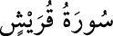

<a name=10881></a><br/>
<b>106- KUREYŞ SÛRESİ</b><br/>
<i><b>Kureyş’e câhiliye devrinde verilen bazı imtiyazlardan bahsettiği için bu adı almıştır.</b></i><br/>
<i><b>Îlâf sûresi de denir. Tîn sûresinden sonra Mekke’de inmiştir, dört âyettir.</b></i><br/>
